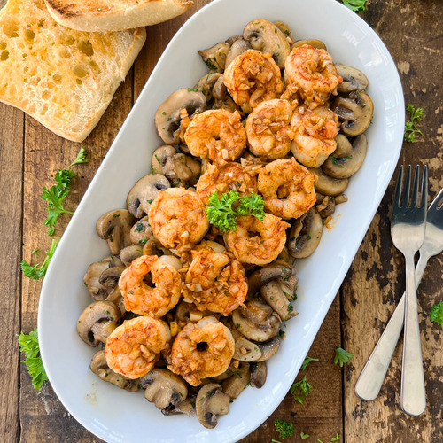

Garlic Shrimp with Mushrooms

Description
Juicy shrimp and earthy mushrooms sizzle together in a fragrant garlic and olive oil bath. A quick, flavorful tapas dish perfect for sharing
Ingredients
- 4 tbsp extra virgin olive oil 60 ml
- 1 lbs white mushrooms (washed & patted dry) 450 grams
- 8 cloves garlic
- 1/2 lbs raw jumbo shrimp (peeled & deveined) 225 grams
- 1/2 tsp hot smoked Spanish paprika 1.25 grams
- handful fresh parsley
- sea salt & black pepper
Steps
- Cut the mushrooms into 1 cm thick slices (a little over a 1/4 inch), thinly slice 4 cloves garlic and roughly chop the parsley
- Heat a large fry pan with a medium heat and add in 2 tbsp (30 ml) extra virgin olive oil
- After a couple of minutes, add in the sliced garlic, mix continuously, after 20 to 30 seconds and the garlic is fragrant, add in the sliced mushrooms, mix together, then mix every 1 to 2 minutes
- In the meantime, add the shrimp over some paper towels and pat dry, then season with sea salt & black pepper, roughly chop 4 cloves of garlic
- After cooking the mushrooms for 7 to 8 minutes and you can see there's liquid in the pan (water released from the mushrooms), raise it to a high heat, go for another 3 minutes or until most of the liquid has been cooked off, then add in 2 tbsp (8 grams) of the chopped parsley and season with sea salt & black pepper, mix together, then transfer into a large serving dish
- Using the same pan with the same heat, add in another 2 tbsp (30 ml) extra virgin olive oil, immediately add in the shrimp, all in a single layer, cook for 1 minute per side or until cooked through, then add in the chopped garlic and hot smoked paprika, mix together until well mixed, then remove from the heat
- Add the shrimp over the mushrooms and garnish with fresh parsley, enjoy!
Recipe taken from: Spain on a Fork